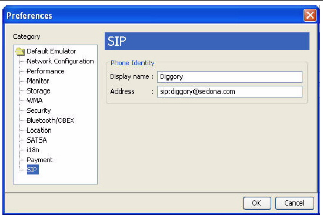
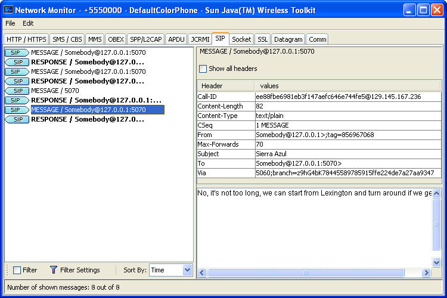
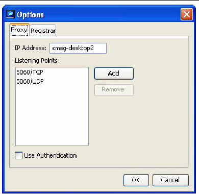
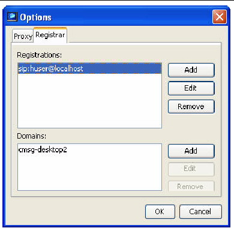

| Sun Java Wireless Toolkit for CLDC User's Guide |
| Sun Java Wireless Toolkit for CLDC User's Guide |
| C H A P T E R 15 |
|
Using SIP |
The Sun JavaTM Wireless Toolkit for CLDC supports the SIP API for J2ME (JSR 180) with a proxy server, registrar, and network monitor support.
Session Initiation Protocol (SIP) is defined by RFC 3261, available at
http://www.ietf.org/rfc/rfc3261.txt.
SIP provides a standard way for applications to set up communications. The application determines what communication actually takes place. SIP can be used to set up instant messaging, text chat, voice chat, video conferencing, or other types of sessions.
A SIP registrar enables client applications to associate a user name with a specific network address. In essence, registering provides a way for a user to say "Here I am!"
A SIP proxy server is really just an entry point into a larger network of proxy servers. SIP messages that arrive at one proxy are routed to an appropriate destination, which is usually another proxy server or an end point, like a desktop computer or a mobile device. Although SIP messages can be sent directly between devices, they are usually routed through a proxy server.
For example, suppose Diggory wants to start a video conference with Polly. Polly is on the road and her mobile phone sends a message to a registrar that associates her name with the mobile phone's network address. When Diggory tries to set up the video conference with Polly, his application uses SIP to ask the registrar for Polly's current network location.
The Sun JavaTM Wireless Toolkit for CLDC includes a very simple SIP proxy and registrar server that you can use for testing applications that use the SIP API. You can also configure the toolkit to use an external proxy server and registrar server.
To adjust settings for the Sun JavaTM Wireless Toolkit for CLDC's SIP environment, choose Edit > Preferences and click SIP.

Display name and Address fields set the system properties sip.display.name and sip.address, respectively. Applications can use these system properties as a standard way to retrieve the identity associated with the device.
Network data that is sent and received using the SIP API can be recorded with the network monitor. The network monitor is fully described in Chapter 5. You can use the network monitor to track SIP messages that are sent to or from the emulator.
Click on the SIP tab to see SIP messages. SIP messages are shown in the left pane of the network monitor. Click a message to see its details in the right pane.
FIGURE 15-2 SIP Messages in the Network Monitor

The Sun JavaTM Wireless Toolkit for CLDC provides a simple SIP proxy server and registrar to make it easier to create SIP applications. To start the server, choose File > Utilities. Select Start SIP Server from the list and press Launch. The SIP server console window appears.
FIGURE 15-3 SIP Server Console

To stop the server, click Stop. To start the server, click Start.
While the server is running, the top left pane shows all users known to the registrar. Click a user name to see details about the user in the top right pane. The bottom pane of the window is a console that shows SIP messages that are received and sent by the proxy.
You can adjust the server options when the server is not running. Stop the server and click Options to see the options window (see FIGURE 15-4).
FIGURE 15-4 Setting Proxy Options

On the Proxy tab, you can set the IP address and ports upon which the server listens for incoming messages. Note that 5060, the default listening point, is a well known port for the SIP proxy. If you are working in a multiuser environment there is a chance another user may be using the port and you might accidentally connect to someone else's SIP server instance(the SIP server does not have any authentication mechanism and TCP/IP ports are freely accessible). If this happens you must specify another port.
Click Add to specify more ports and their types. Select a port and click Remove to remove a listening port.
Check Use Authentication to force connecting clients to authenticate themselves to the server. The scheme used is digest authentication, which is described in section 22.4 of RFC 3261. SIP's digest authentication is nearly identical to HTTP digest authentication.
On the Registrar tab, you can set up the users and domains known to the registrar. The top list contains SIP users that are automatically registered when the SIP server is started. You can add a new user, edit an existing user, or remove a user.
In addition, you can adjust the list of domains managed by this registrar. Press Add to add a domain, Edit to edit an existing domain name, or Remove to remove a domain.
FIGURE 15-5 Setting Registrar Options

| Sun Java Wireless Toolkit for CLDC User's Guide |
Copyright © 2007, Sun Microsystems, Inc. All Rights Reserved.